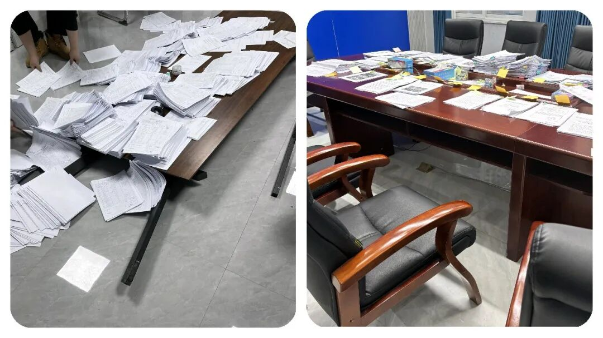
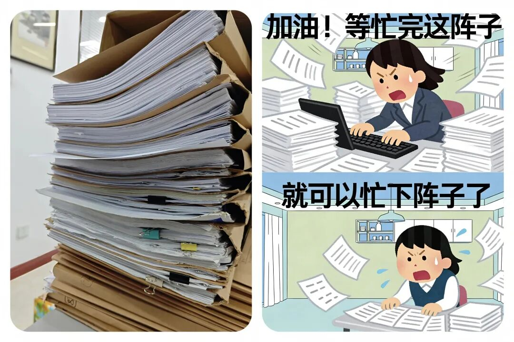

你注意到了吗？乡镇“办个事”复杂化了！本来是3分钟能搞定的小事，却搞出一大串流程，事没干多少，台账堆成山。
原创
点击关注👉🏻
点击关注👉🏻
田间烟火
在小说阅读器读本章
去阅读
在小说阅读器中沉浸阅读
田间烟火🔥
嗨喽，大家好，我是【田间烟火】～
我相信不少人都有这样类似的体验：
本来是一件几分钟能搞定的小事，结果牵扯出一大串流程，只见干部在
各类系统和报表间来回忙活
，佐证材料一大叠，手机照片一大堆，
事却没见快多少
。
到底是什么原因导致这样？
回过头来找原因，很多时候并不是基层人员故意这样做的，而是
不敢冒险
。
流程和留痕
成了自保工具，让进程变成“
流水线
”悄然成为不少地区的基层日常。
01
流程繁杂的基层日常
现实中，这种流程繁杂的现象到处都是。
最近有干部反映，发放
烟感
报警器，从“
下发即可
”变成要“
安装、拍照、绑定手机号
”，哪家群众不配合还得拍视频留证。
往返折腾几个月，最终大部分时间
花在证明工作
合规
上。
不只是这一个例子。
例：
某县城的城管说，他们
整改路面卫生，必须严格拍照
，
从“有树叶”到“清扫中”再到“清扫后”，三张照片一个不能少
。
这才算整改闭环，
台账齐全，检查通过，有人相信
才可以。
有些民事纠纷调解，
本来村干部上门说合几句，问题就能解决
。
现在文件一条条来，
申请书、调查笔录、调解协议、回访回执，调解现场拍照，最好外加全程录音录像
。
村民不爱配合，工作人员自己也嫌麻烦，
能调的矛盾也拖着，有的干脆建议大家直接去法院
。
不少基层干部坦言，最头疼的不是不会做事，而
是不敢做减法
。
有时候上面考核细到照片时间戳、台账页数，一旦出了问题，责任一下子压到具体人头上，
想干点实事，先得防得住可能追责
。

02
复杂流程真的有必要吗？
有人可能会问，这些复杂流程，真的有必要吗？
要说一点用处都没有也不准确。
层层分工后，确实能查清到底是
谁负责、谁执行
，如果出了问题，就是追那个负责的人，反正就是追责有据。
但流程越细，反而带来
新问题。
表面规范了，实效却未必提升不少
。
数字化变成新负担
数字化本是增效率的好工具，结果在实际落地中，很多地方成了新的负担。
有这种情况：
有个省推行数字化督查平台，本来他的目的是线上一站式管控、全流程指挥
。
但有的干部反馈，实际工作要“
线上填、线下补
”，数据重复录入，
照片、视频、电子版，甚至还要签字盖章纸质版
全要。
平台填不全，直接驳回，反而增加“
证明自己
”的时间。
有时候完成一件小事，一套流程下来“
出
场打卡、上传数据、签到
。
效率初看高级了，提升了，但出现场实际效果谁也没直观体验，报表成绩却年年满格。
回头一查，大量数据造假、重复填报，反而掩盖了实际短板
。
流程复杂化的核心推手是信任缺失
流程复杂化，另一头的推手其实是信任。
上级担心下级不干事，下级怕出错又被追责
，最后监督手段就
变成一层又一层“留痕，佐证”
，
社区、村里、办事员
通通裹进体系里。
从材料到照片、从线上到线下，
真正落地到服务群众时，反而效率大打折扣

03
破局的尝试与方向
当然，也有地方走出了另外一条路。
有个城市，有几个街道把数字化平台和实际调研结合，让
干部直接用手机小程序采集现场信息
，系统后台自动分析匹配，省下了不少纸质台账。
检查不是天天来看材料，而是以成效为主，
群众反映满意就是核心标准
。
这种尝试，虽然有待完善，但起码回归了最初“
治理为人民
”的思路。
流程不是越全越好，合理才是关键
也不是所有流程都应该一刀切地砍掉。
像这种在
突发公共事件、应急安全管理
等领域，分工和留痕就是必要的。
一味追求“
快干快办
”，有时会
留下漏洞
。
问题不仅在于有没有流程，而在于流程是不是
合理
、是不是
服务目标
。
真正有效的治理，是把
该精细的事情精细做好，不该复杂的别自找麻烦
。
考核指挥棒要回归实效
还有一个老问题，
考核指标怎么设、怎么查，总体导向是什么
。
反正还是有很多地方把
“
材料是否齐全、
照片是否标准”
当作干部能力的第一考核，其实本末倒置。
群众问题解决得好不好、矛盾有没有源头化解，才是治理水平的
真实反映
。
搞得太虚，前线再努力，大家都是在证明自己“没出错”，并不真正靠近老百姓的需求
。
在实际操作中，一个10来人的小办公室，背后可能要对接几十个上级部门。
汇报标准、材料要求各不一样
，基层要不是不留痕，就是不敢不留，毕竟“
自我佐证
”成了保命线。
这是流程困局的根本
。
要让简单的事简单办，归根结底还是要让考核“指挥棒”回归实效。
有时候
突击检查
与
常态督导
结合、
群众满意度
和
实际问题解决率
纳入评级，既有灵活度，也有可衡量标准。
新考核模式允许小错、鼓励快速响应，既给基层减压，也让制度真正起效果，也更好体现基层减负工作。
数字化治理要服务于人
在数字化治理方面，技术能让管理提速，
但不能让干部变成“打卡机器”
。
开发时，得有实际操作者参与设计，平台精简到一屏操作，后台多部门数据打通，一线
干部填写一遍就够
，这才是真正提升效率的办法。
其他领域的参考
流程困局不只发生在治理领域，企业内部管理也有类似问题。
也有不少500强企业推行过“
流程革命
”，专门踢掉一些无用环节，让一线部门主导流程设计，倒逼总部改变考核和授权模式。
有一年某知名互联网公司发现项目审批流程太长，干脆取消了三级审批，直接让项目组对老板负责，项目周期立刻缩短三分之一。
这给治理领域同样带来了启示：“
放权和精简同样需要决心，但不会一开始就一劳永逸
”
。
04
结语
纠结流程、苦于证明，并不是基层干部的最佳选择和意愿
。
真正的善治，是能省则省，能快就快，把事情做“对”放在前、把事情做“全”放在后
。
指望靠一套海量材料让风险绝迹，恐怕只是把本应解决的问题无限搁置。
说到底，制度和技术只是工具，根子还在信任和目标导向。
回归问题本身，流程困局自然会有破解的那一天。
希望不要让基层干部心寒：“事没干多少，台账堆成山”。
身边是不是也遇到过小事被流程拖慢、干活只剩填表和佐证材料的情况？
欢迎在评论区聊聊你的真实感受～